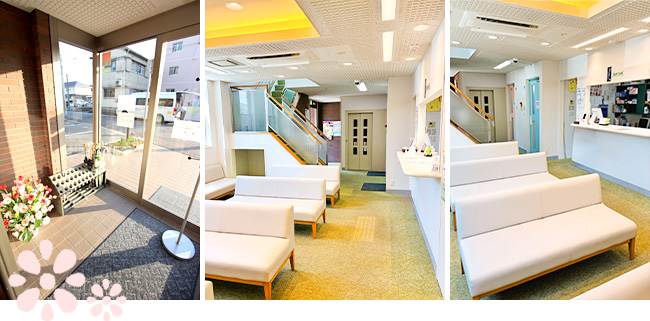
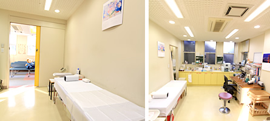
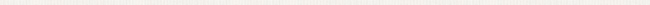
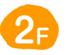
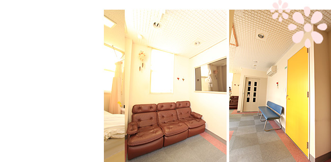
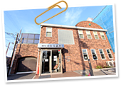

当院のご紹介
エントランス～受付・待合室
エントランスを抜けてすぐに、受付・待合室があり、ベビーベッドなどをご用意しておりますので、お気軽にご利用ください。お車でお越しの方は、専用駐車場をご利用いただけます。（医院前駐車場3台、医院南前大きな駐車場24番25番）

診察室
待合室右側正面に診察室を設けています。診察は、プライバシーに配慮し、また、お子様が緊張しないように、やさしく接するよう心がけております。



小休憩スペース
2階は階段を上がってすぐに大きなワンちゃんの写真が飾ってある、小休憩できるスペースがあり、その奥にBCG予防接種室と続いています。エレベーターも完備しているので、ベビーカーでも安心してお越しいただけます。

謝花医院の施設情報
| 診療科目 | 小児科・内科 |
|---|---|
| 所在地 | 〒660-0801 兵庫県尼崎市長洲東通3-1-31 |
| 電話番号 | 予約診療専用回線：06-6481-7178 通常のお問い合わせ：06-6481-7177 |
| 交通情報 | JR東西線「尼崎」駅、阪神本線「杭瀬」駅より徒歩約13分 阪神本線「大物」駅より徒歩約11分 |
| 駐車場 | 5台（院前3台、向かいP2台：24番、25番） |
| 院長 | 謝花 章彦 |
| 院長略歴 | 昭和51年3月 関西医科大学卒業 昭和51年4月 兵庫医科大学小児科学教室入局 昭和54年4月 阪和病院小児科 昭和54年11月 父の跡を継ぎ、謝花医院開業 |
| 診療時間 | 平日 9:00～13:00 17:00～20:00 土曜 9:00～13:00 休診日: 土午後、日、祝 |

謝花医院 (小児科,内科) 尼崎市の小児科・内科 各種予防接種実施
- 予約診療専用回線
- 06-6481-7178
- 通常お問い合わせ
- 06-6481-7177
水・土 9:00～13:00
休診日 土曜水曜午後 日曜祝日
診療受付・お電話でのお問い合わせは診療日の9:00～12:30、17:00～19:30にお願いいたします。